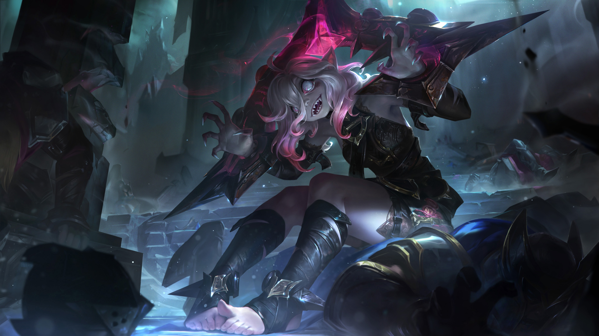
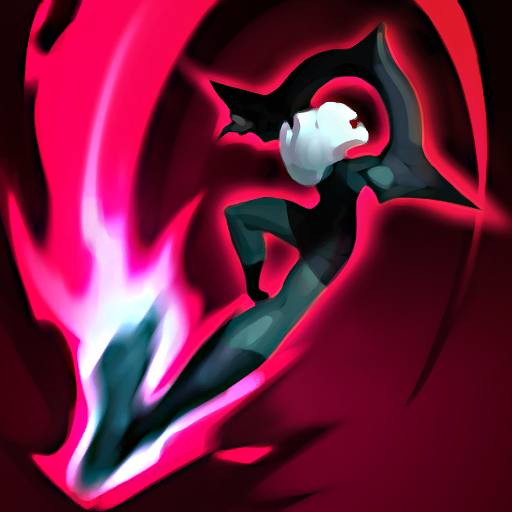
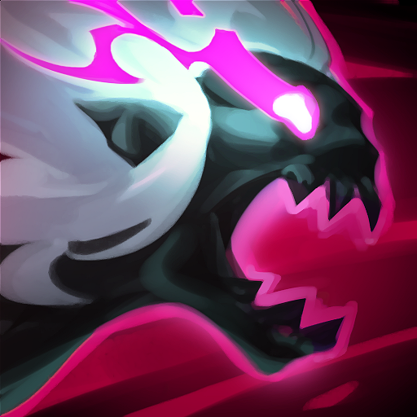
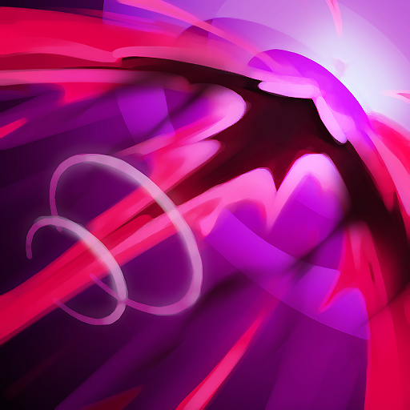
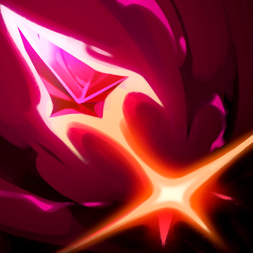

Novo Campeão: [Briar, Frenesi Voraz!!!]
Nova Campeã entrando em ação em runeterra!!.
Uma Historia Sanguinaria !!
Sabemos que a maioria dos noxianos (é de vocês mesmo que estamos falando, Swain e Sion) não se importa com mais nada além de dominar seus oponentes. Mas matar coisas sempre foi muito fácil para Briar. Fácil até demais,porque ela foi feita para isso. Briar foi criada pela Rosa Negra, por meio da hemomancia (também conhecida como sangue mágico), para ser uma arma viva. Ela precisa consumir sangue para se recuperar. E se tem uma coisa que ela gosta é de sangue... A Rosa Negra criou um ser consciente para que ela pudesse compreender e executar ordens, mas havia uma falha. Para que ela abatesse seus alvos, a Rosa Negra manteve Briar em um estado de frenesi. Ela vivia em uma perpétua fúria sanguinária. Nesse estado mental, a inteligência e o vocabulário de Briar se resumiram basicamente a: "AHHHH! MAIS SANGUE!".
Kit De Habilidades:
Passiva - Maldição Carmesin
Briar ganha cura aumentada baseada em sua Vida perdida, e seus ataques e habilidades aplicam sangramento por um curto período acumulável. O sangramento causa Dano Físico baseado no número de acúmulos e cura Briar numa porcentagem do dano pré-mitigação. Briar não tem Regeneração de Vida base, e conjurar suas habilidades custa Vida.
Q - Vertigem
Briar salta em direção a um alvo, atordoando-o por um curto período, causando Dano Físico e reduzindo a Armadura dele. Briar para de priorizar Campeões se utilizar esta habilidade em uma tropa ou monstro durante Frenesi Sanguinário.
W – Frenesi Sanguinário/Ataque Faminto
Briar pula até um local e entra em Frenesi Sanguinário, provocando o inimigo mais próximo (priorizando Campeões) por um período. Durante o Frenesi Sanguinário, ela ganha Velocidade de Ataque e Velocidade de Movimento, e seus ataques causam Dano Físico ao redor do alvo principal. Briar pode reconjurar esta habilidade para fortalecer seu próximo ataque. Ela causa Dano Físico baseado na Vida perdida e cura Briar numa grande porcentagem do dano causado.
E – Grito Arrepiante
Início do carregamento: Briar remove Frenesi Sanguinário e reúne energia, ganhando redução de dano e restaurando Vida. Lançamento: Briar dá um grito que causa dano baseado no tempo de carregamento e Lentidão por um curto período. Quando o grito está totalmente carregado, ele gera um empurrão, causando dano adicional e atordoando inimigos que atingirem paredes.
R – Morte Certa
Briar lança um hemolito e voa até o primeiro Campeão atingido, que é marcado como presa. Ao pousar, ela causa muito Dano Físico a tudo ao seu redor e faz inimigos próximos fugirem. Depois disso, ela entra num Frenesi Sanguinário fortalecido e persegue a presa até que um dos dois morra. Nesse período, ela ganha Armadura, Resistência Mágica e Velocidade de Movimento adicional.